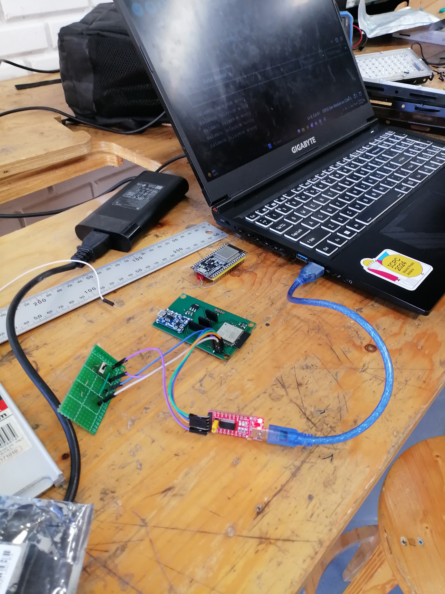
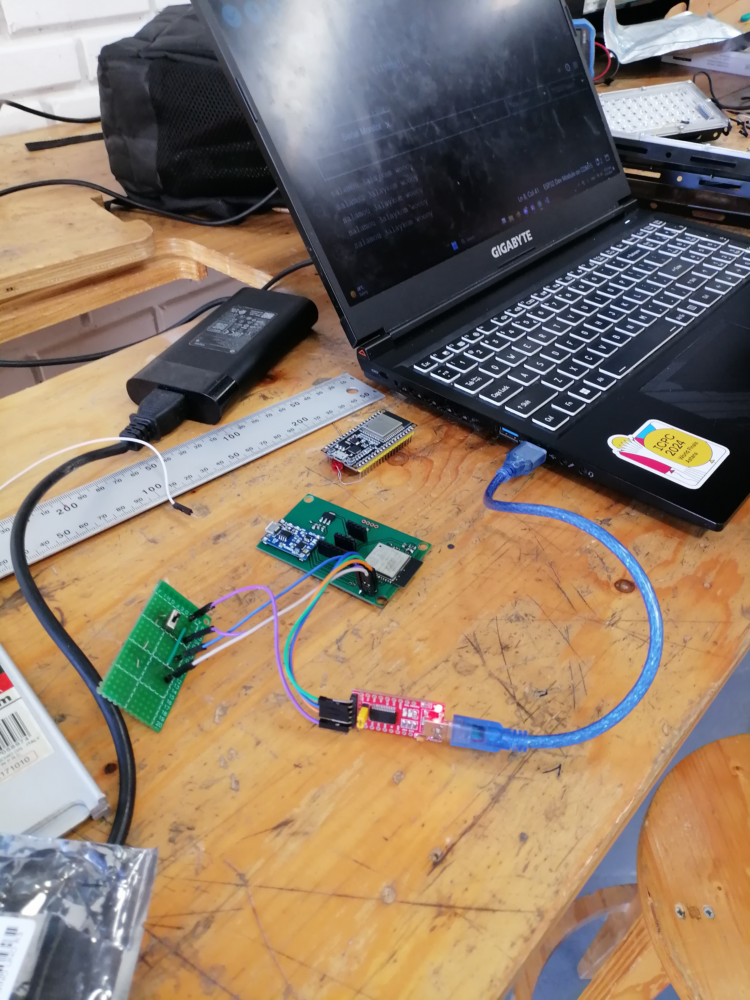

Hi,
I am Amine
Embedded Software Engineering student
My CV
About
I am Amine Belhaj Amor
Hello there! I’m Amine Belhaj Amor, an industrial computing and embedded systems engineering student at INSAT passionate about robotics, embedded systems, and the Internet of Things. I enjoy designing and developing innovative embedded solutions that combine hardware and software to solve real-world problems. I’m particularly interested in microcontrollers and high-level robotics software like ROS 2, exploring how they work together to create intelligent, autonomous systems. What drives me most is taking on new challenges, learning continuously, and applying what I know to build meaningful, impactful technologies.
Experience
Robotics R&D Internship
ENSEM Nancy May - July 2025 At ENSEM Nancy, I worked on the development of a LiDAR-based perception system for an autonomous robotic platform. My work focused on configuring a ROS 2 software environment within Docker containers running on an NVIDIA Jetson AGX Orin. I established inter-node communication using the DDS protocol with host networking, ensuring reliable message exchange across containers.
I designed and implemented a LiDAR obstacle detection node, handling acquisition, preprocessing (PassThrough filtering and RANSAC segmentation), and Euclidean Cluster Extraction to identify distinct obstacles. The system published structured data to ROS 2 topics for future integration into autonomous decision modules.
This project strengthened my expertise in ROS 2 networking, containerized development, and real-time LiDAR processing within embedded robotic systems.

Embedded System and IoT Internship
Orange Digital Center Tunis July - November 2024 During my internship at Orange Digital Center, I contributed to the design and development of a monitoring device for dialysis patients, as part of the Orange Summer Challenge program. The goal was to create a compact and intelligent embedded system capable of acquiring and processing vital data in real time to help detect early signs of complications such as hyperkalemia.
I participated in the entire development cycle of the device, from hardware design to embedded software implementation. On the hardware side, I carried out the 3D modeling of the device using SolidWorks, ensuring ergonomic integration of sensors and components. I then designed a custom PCB with KiCad, integrating an ESP32 microcontroller, PPG/SpO₂ and temperature sensors, battery management, and voltage regulation modules within a compact form factor.
On the software side, I implemented a real-time embedded architecture based on FreeRTOS, enabling deterministic task scheduling for data acquisition, filtering, and wireless communication. I developed a signal processing module applying band-pass filtering and interpolation to clean ECG and PPG signals and estimate core body temperature from skin readings. Processed data was then transmitted to a server for further analysis by an AI anomaly detection model.
This internship strengthened my skills in embedded systems design, real-time software development, signal processing, and IoT communication, while applying them to a concrete biomedical engineering project.

 

Projects

Participated in Eurobot 2024 Competition
October 2023 - May 2024Designed and implemented a fully autonomous robot for Eurobot 2024, focusing on embedded control, communication, and mechanical design.
- Developed the navigation and control system on an STM32 microcontroller using C.
- Set up communication between the STM32 and a Raspberry Pi using rosserial for real-time data exchange.
- Contributed to the robot’s mechanical design in SolidWorks, optimizing component layout and accessibility.
- Collaborated on system integration, autonomous strategy, and testing under competition constraints.
Remote Control System for an Autonomous Differential-Wheeled Robot
May 2024 - June 2024This project focuses on developing a remote control system using an intuitive graphical user interface (GUI) to interact with a differential wheeled robot. The system employs an ESP32 microcontroller with integrated Wi-Fi for communication, enabling real-time control and monitoring from any location. A nested-loop controller is implemented to regulate both the position and velocity of the robot. The communication between the interface and the system is established via the MQTT protocol, allowing for efficient data exchange over local and wide-area networks. The project demonstrates the adaptability of the interface, making it applicable to various industrial control systems, such as temperature or level regulation. Through experimental validation, the system has been optimized by adjusting control parameters, ensuring smooth and stable performance.
Awards
2nd Place - Embedded Competitive Programming Contest ECPC1.0
Organized by IEEE & Centre Supérieur de Formation (CSF)
2nd Place - Embedded Competitive Programming Preparation ECPP1.0
Organized by IEEE & Centre Supérieur de Formation (CSF)